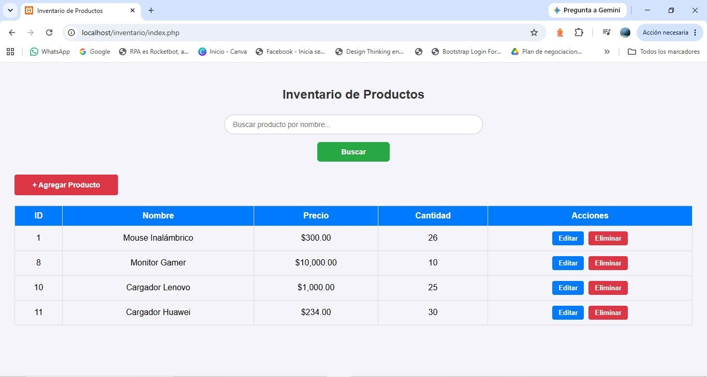
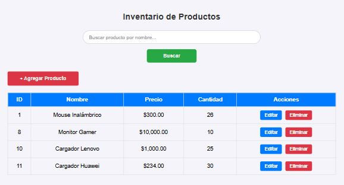

Sistema de Gestión de Inventario (CRUD)
Proyecto Funcional
🖥️ Vista
Escritorio

📱 Vista Móvil

Aplicación web interactiva para administrar inventarios en tiempo real. Permite registrar, consultar, modificar y eliminar productos con almacenamiento persistente en MySQL, incluyendo motor de búsqueda integrado y validaciones dinámicas.
PHP
MySQL
HTML5
CSS3
JavaScript
- Seguridad Backend: Consultas preparadas (`bind_param`) para prevenir inyecciones SQL en la base de datos.
- Validación Frontend: Restricción de caracteres especiales, números negativos y límites de texto en tiempo real.
- Maquetación Responsiva: Adaptabilidad total para móviles y computadoras usando Flexbox y Media Queries.